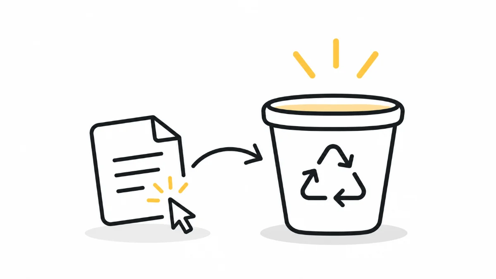

HeuristicsH2Match Between System and the Real World
Design is not about teaching. It's about feeling at home
Users arrive with mental models already formed. Built from years of dustbins, shopping carts, and landline phones. The designer's job isn't to teach them something new. It's to meet them where they already are.

Welcome back to my 10-week series on Nielsen's Usability Heuristics.
Last week, I spoke about the importance of visibility: how users feel more confident when systems clearly show what's happening.
This week, let's talk about something just as important:
Heuristic #2: Match Between the System and the Real World
In simple terms, it's about designing products that speak the user's language. Not just through words, but also through visuals, interactions and familiar experiences.
The idea is to make digital products feel natural by connecting them with things people already understand from the real world.
What does this mean?
It's simple: design for your users, not just for yourself or your internal team.
As UX designers, our first responsibility is to understand who our users are.
- How comfortable are they with technology?
- How do they normally interact with digital products?
- What do they expect based on their real-world experiences?
When we understand these things, it becomes easier to make the right design decisions.
For example:
- Choose icons that users can easily recognise.
- Use words that make sense to them.
- Avoid unnecessary jargon and technical terms.
Assuming that users will simply "figure it out" is never a good UX strategy.
Even senior professionals or people in decision-making roles might not be as comfortable with digital interfaces as we think.
That's why I believe clarity should always come before cleverness.
A real-world example: Recycle Bin = Dustbin
Let's take a very simple example: the Recycle Bin icon on our computers.
We've all seen it. And most of us instantly know what it means.
But have you ever wondered why?
Think about a dustbin in the real world.
We throw away things that we no longer need. Sometimes, we realise that we've thrown away something important. If the dustbin hasn't been emptied, we can still retrieve it.
But once it's emptied, the item is gone.
The Recycle Bin on our computers works in almost the same way.
- Deleted files go into the Recycle Bin.
- If we need something back, we can restore it.
- Once the Recycle Bin is emptied, those files are removed permanently.
See how simple that is?
The digital system follows something we already understand from our everyday lives.
We don't need someone to explain what the Recycle Bin does. The familiar concept itself helps us understand how it works.
That's exactly what this heuristic is about: connecting digital experiences with real-world expectations.
More everyday examples
We see this heuristic in many small but interesting ways.
Think about some of the icons and interactions we use every day.
- Shopping cart: The cart icon in e-commerce applications represents the physical shopping cart we use in supermarkets. We add products to it before purchasing them.
- Phone call: Even today, the call icon looks like an old landline telephone receiver, although most of us use smartphones.
- Alarm: The alarm icon often resembles an old analogue clock with bells.
- Car racing games: Racing games can feel more natural when they provide a steering wheel interface rather than tilt controls. Personally, I prefer that too.
These aren't random design choices. They're intentional decisions that connect digital actions with things users already recognise.
When something feels familiar, users can understand it more quickly without having to stop and think about what it means.
It's not just about icons. It's also about language.
Matching a system to the real world doesn't mean only choosing familiar icons or layouts. The words we use are equally important.
Think about it.
When you visit a website or use an application, you shouldn't have to understand technical terminology just to complete a simple task.
Keep the language simple and clear.
Avoid unnecessary jargon, technical terms and short forms that your users may not understand.
For example:
- Instead of using "Deploy" when you mean "Publish", use the word that makes more sense to your users.
- Avoid acronyms like ETA, CX and NPS unless your users are familiar with them.
- On informational websites, avoid internal business terminology and explain things in language that everyone can understand.
This becomes especially important on introductory pages and websites that introduce an organisation or product to people for the first time.
Remember, not everyone visiting your website knows your business as well as you do.
Clear language is inclusive language.
Know your users
Everything we've discussed comes down to one central idea:
Know your users well.
The better we understand their habits, expectations, mental models and comfort with technology, the easier it becomes to design products that feel natural to them.
Think about a few simple questions:
- How do they normally interact with websites?
- What devices are they using?
- What references or experiences are they already familiar with?
Understanding these things helps us make better design decisions.
This heuristic isn't just about making things familiar. It's about understanding people and building trust through that understanding.
A concluding thought
When systems speak a language that users already understand, the product feels natural, almost as if it was made just for them.
The more closely we align our designs with the real world, the more intuitive and enjoyable our experiences become.
Design isn't about teaching people something new. It's about letting them feel at home.